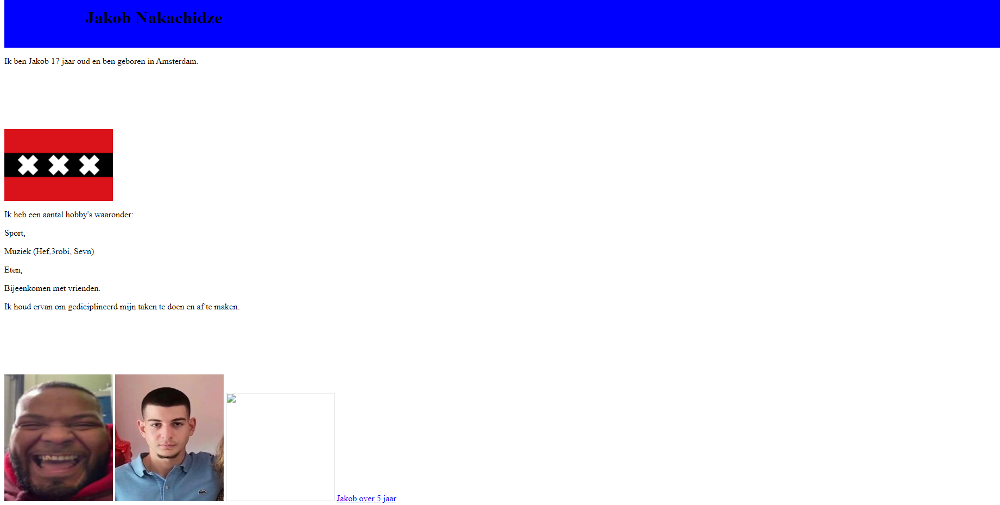
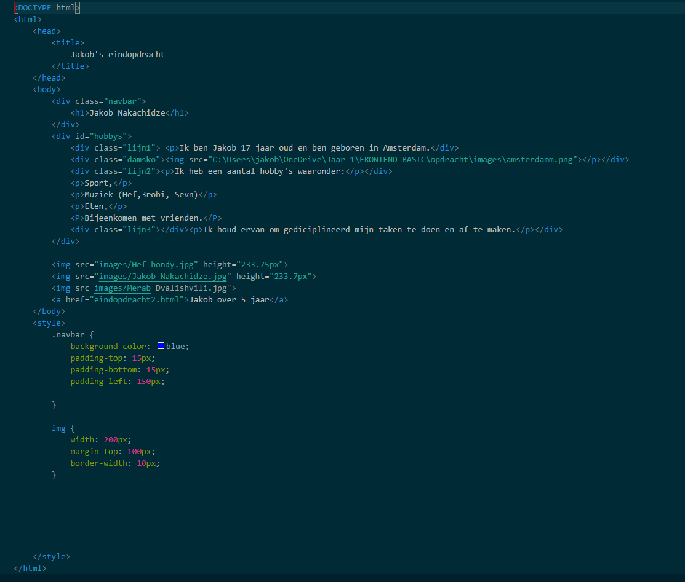

Ik heb vanwegen mijn studie een paar kleine projecten gehad in de zin van het afronden van opdrachten voor school.
U kunt denken aan kleine functies in php, kleine frontpages met HTML, JavaScript en gestyled met css.
 Linker foto frontpage van Frontend basic.
Rechter foto is de code van Frontend basic.